美式英語：Rhotic
GA 通常是 rhotic。也就是說，拼字中的 r 在字尾或元音後仍然會發音， 常表現為 /r/ 或兒化元音，例如 /ɝ/、/ɚ/。
本頁整理繪本中含有字母 r 的單字，並參照 Cambridge Dictionary 的英式／美式音標寫法。 每個單字都連到 Cambridge Dictionary 的真人發音頁：左邊看英腔 RP，右邊看美腔 GA。
英美 R 音差異不是單字個別規則，而是整套口音系統的差異。
GA 通常是 rhotic。也就是說，拼字中的 r 在字尾或元音後仍然會發音， 常表現為 /r/ 或兒化元音，例如 /ɝ/、/ɚ/。
RP 通常是 non-rhotic。當 r 位在字尾或元音後，且後面沒有接元音時， 通常不發成輔音 /r/，而是呈現長元音或 /ə/。
每張卡片都有 Cambridge 真人發音連結。Cambridge 頁面會提供 UK / US 音標與音檔。
美音保留 r 音；RP 英音字尾 r 通常不發，結尾呈現 /ə/ 的滑音感。
Cambridge Dictionary pronunciation ↗美音是 r-colored vowel；RP 英音是長元音 /ɜː/，沒有捲舌 r。
Cambridge Dictionary pronunciation ↗美音保留 /r/；RP 英音省略 r，前面的母音拉長。
Cambridge Dictionary pronunciation ↗第一音節差異最明顯：美音 /ɝː/；RP 英音 /ɜː/。
Cambridge Dictionary pronunciation ↗Cambridge 用 raised r 標示英音 r 只在後接元音時發音；美音字尾為 /ɚ/。
Cambridge Dictionary pronunciation ↗字首 r 後面接元音，英美都會發 /r/。
Cambridge Dictionary pronunciation ↗r 在輔音叢 /br/ 中，英美都會發出 r。
Cambridge Dictionary pronunciation ↗r 在輔音叢 /ɡr/ 中，英美都會發出 r。
Cambridge Dictionary pronunciation ↗r 音本身英美都發；主要差異是母音 /ɒ/ 與 /ɑː/。
Cambridge Dictionary pronunciation ↗r 在 /dr/ 輔音叢中，英美都會發音。
Cambridge Dictionary pronunciation ↗音標寫法以 Cambridge Dictionary 的 UK / US 對照為主要參考，並加上課堂報告用說明。
| 單字 | 英式 RP | 美式 GA | 分類 | R 的位置 | 教學提醒 |
|---|---|---|---|---|---|
| Bear | /beər/ 或 /bɛə/ | /ber/ 或 /bɛr/ | 顯著差異 | 字尾 R／元音後 R | 美音保留 r 音；RP 英音字尾 r 通常不發，結尾呈現 /ə/ 的滑音感。 |
| Bird | /bɜːd/ | /bɝːd/ | 顯著差異 | 元音後 R | 美音是 r-colored vowel；RP 英音是長元音 /ɜː/，沒有捲舌 r。 |
| Horse | /hɔːs/ | /hɔːrs/ 或 /hɔrs/ | 顯著差異 | 元音後 R | 美音保留 /r/；RP 英音省略 r，前面的母音拉長。 |
| Purple | /ˈpɜː.pəl/ | /ˈpɝː.pəl/ | 顯著差異 | 元音後 R | 第一音節差異最明顯：美音 /ɝː/；RP 英音 /ɜː/。 |
| Teacher | /ˈtiː.tʃər/（RP 實際常讀 /ˈtiː.tʃə/） | /ˈtiː.tʃɚ/ | 顯著差異 | 字尾 R | Cambridge 用 raised r 標示英音 r 只在後接元音時發音；美音字尾為 /ɚ/。 |
| Red | /red/ | /red/ | 差異較小 | 字首 R | 字首 r 後面接元音，英美都會發 /r/。 |
| Brown | /braʊn/ | /braʊn/ | 差異較小 | 輔音叢 BR | r 在輔音叢 /br/ 中，英美都會發出 r。 |
| Green | /ɡriːn/ | /ɡriːn/ | 差異較小 | 輔音叢 GR | r 在輔音叢 /ɡr/ 中，英美都會發出 r。 |
| Frog | /frɒɡ/ | /frɑːɡ/ | 差異較小 | 輔音叢 FR | r 音本身英美都發；主要差異是母音 /ɒ/ 與 /ɑː/。 |
| Children | /ˈtʃɪl.drən/ | /ˈtʃɪl.drən/ | 差異較小 | 字中 DR | r 在 /dr/ 輔音叢中，英美都會發音。 |
每頁的 /r/ 關鍵字已標記；點擊單字可跳到發音卡，再連到 Cambridge Dictionary 聽真人 UK / US 發音。
下方將 PDF 轉成逐頁圖片，方便在網頁中標記 /r/ 單字。 標成綠色的單字是本頁正在分析的 r-related keywords。
Source link provided by user: fliphtml5.com/jmlya/nquy/basic
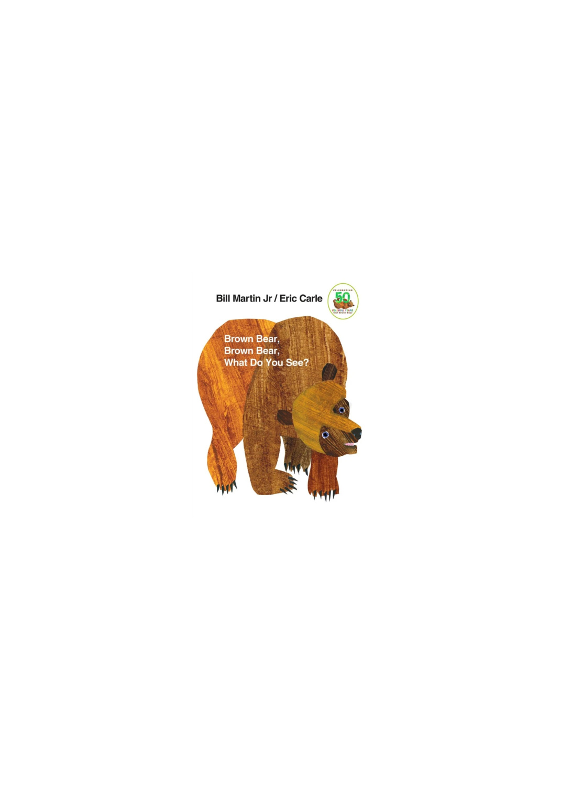
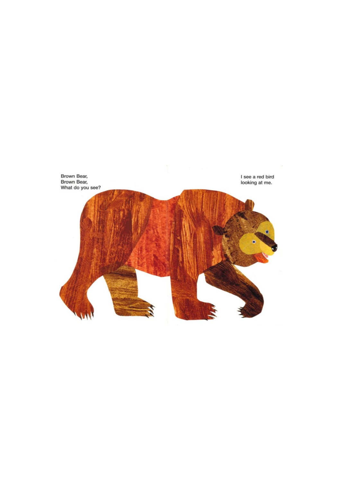
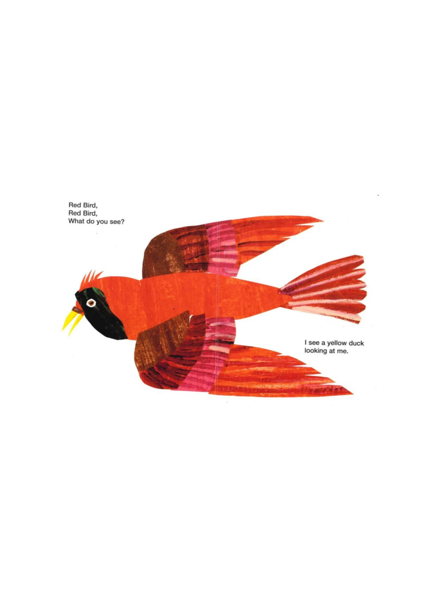
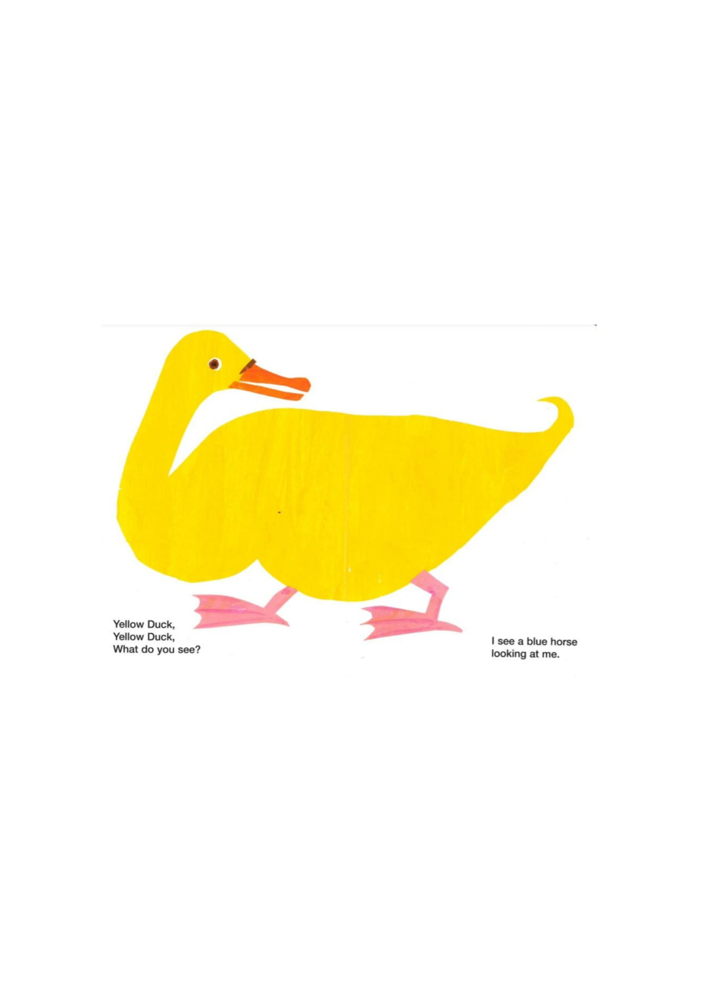
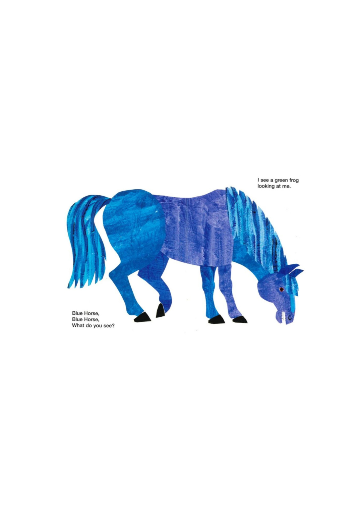
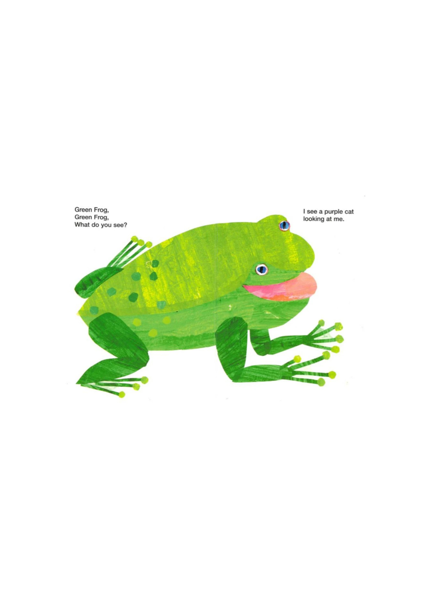
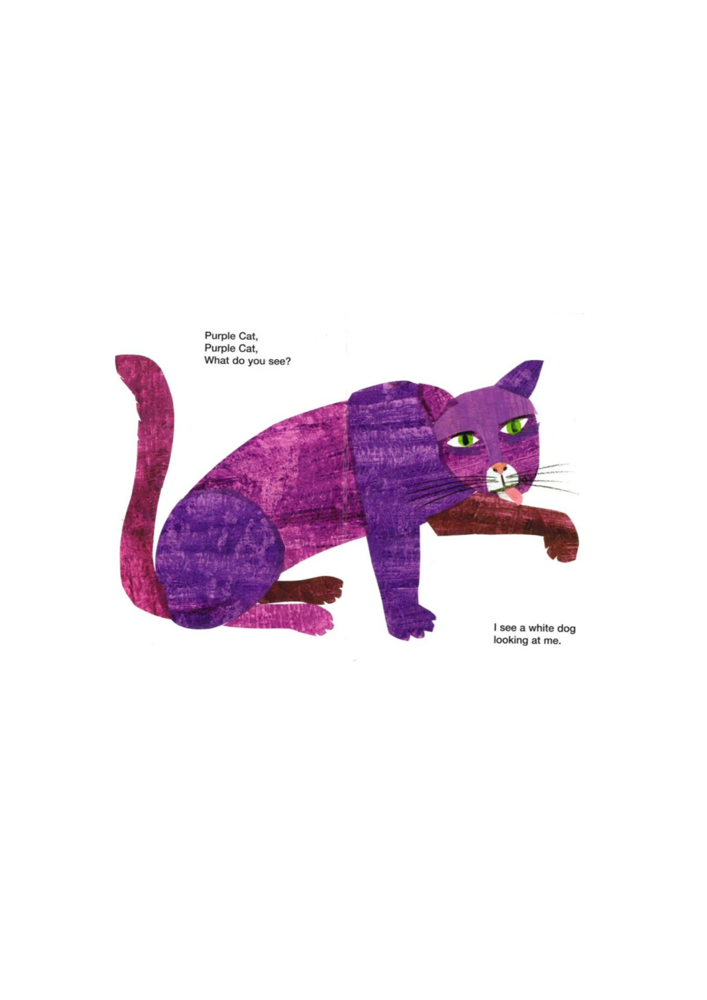
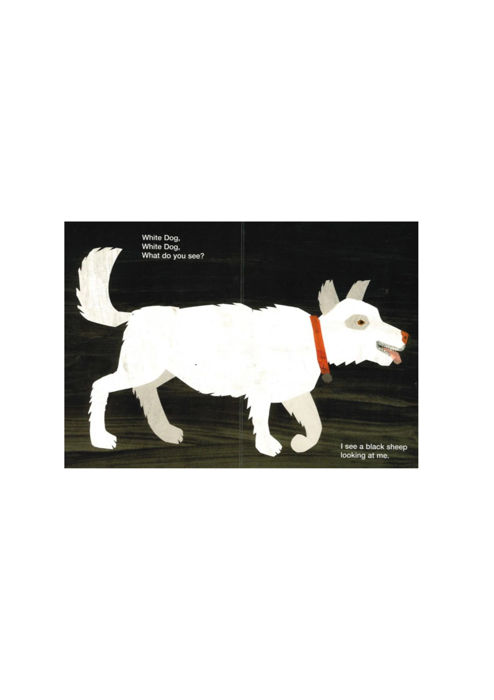
White Dog, White Dog, What do you see? I see a black sheep looking at me.
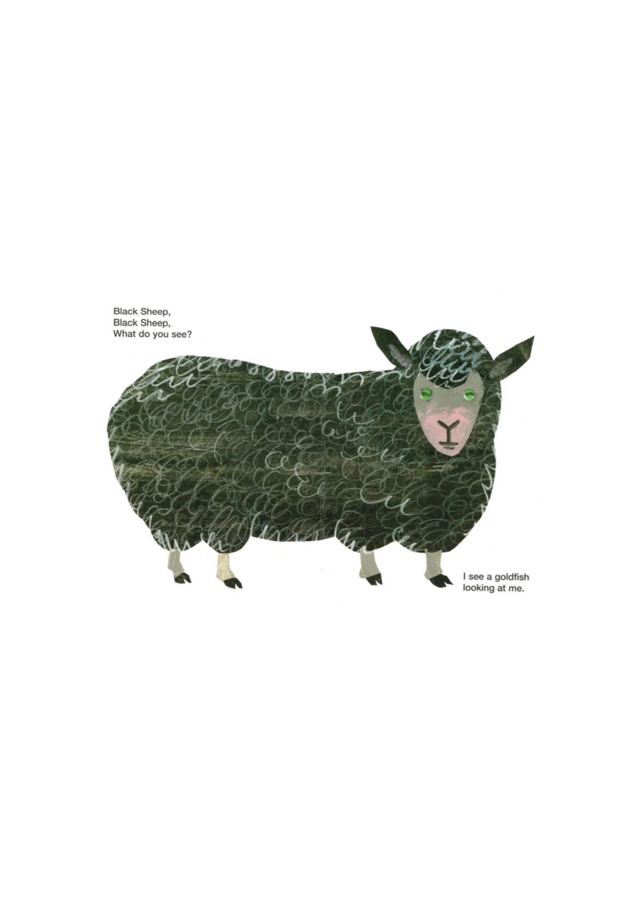
Black Sheep, Black Sheep, What do you see? I see a goldfish looking at me.
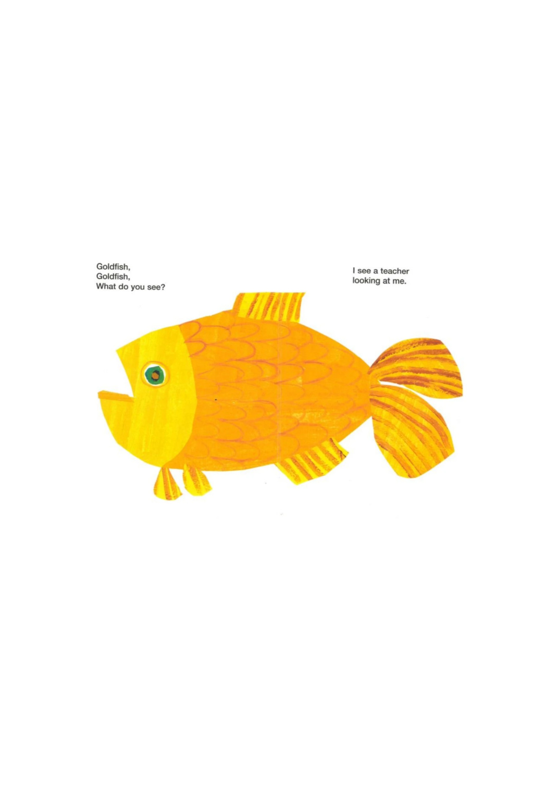
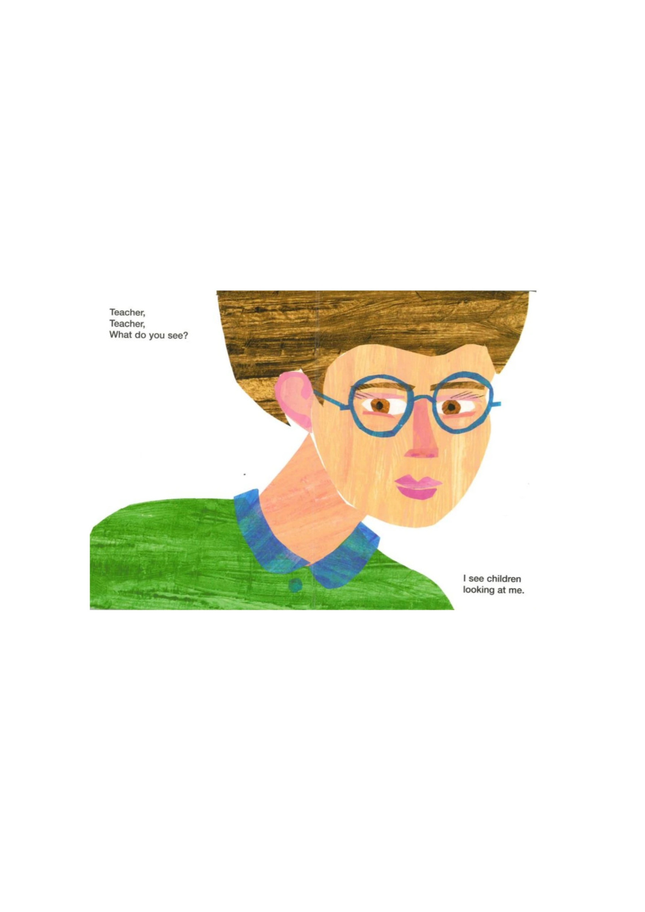
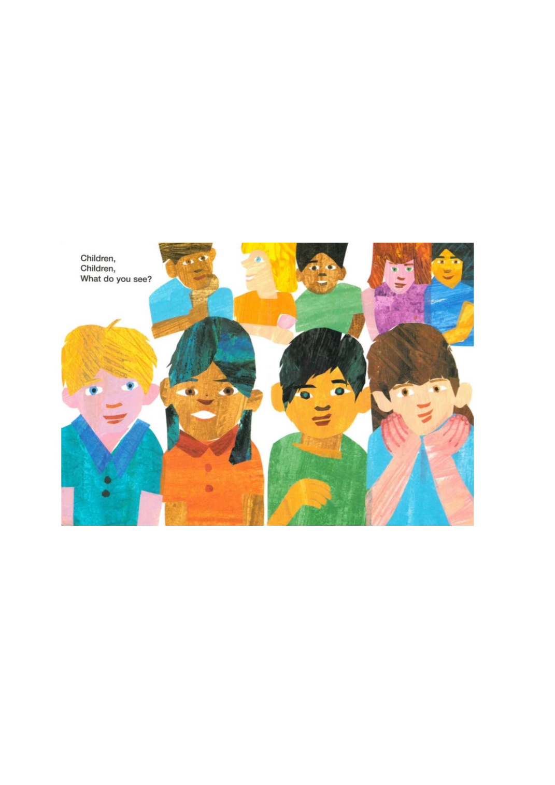
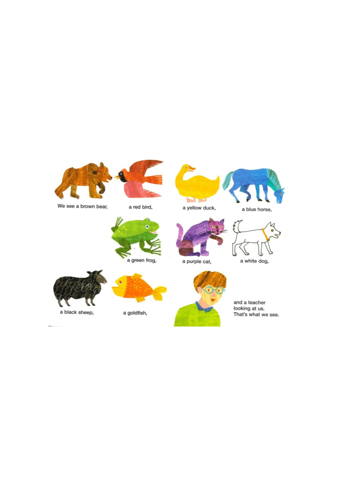
可直接點進去看 Cambridge Dictionary 的 UK / US 音標與原生音檔。
本頁的單字音標主要參照 Cambridge Dictionary 的 pronunciation 頁面。 Cambridge Pronunciation 頁面提供英式與美式音標及真人發音； 另外，Cambridge 的 phonetic symbols 說明頁可用來查 IPA 符號。 關於英音中 (r) 的標示，Oxford Learner's Dictionaries 的 pronunciation guide 也說明： British pronunciation 的 (r) 通常只有在下一個字以元音開頭時才發音，而 American English 的 r 通常都要發出。
Cambridge English Pronunciation · Cambridge Phonetic Symbols · Oxford Pronunciation Guide